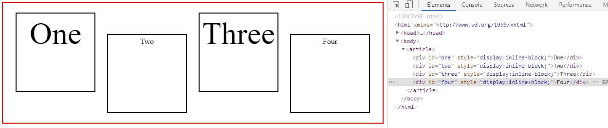
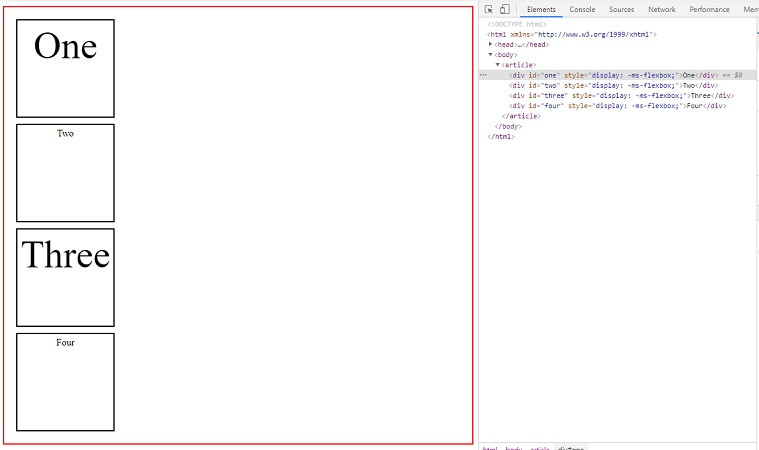
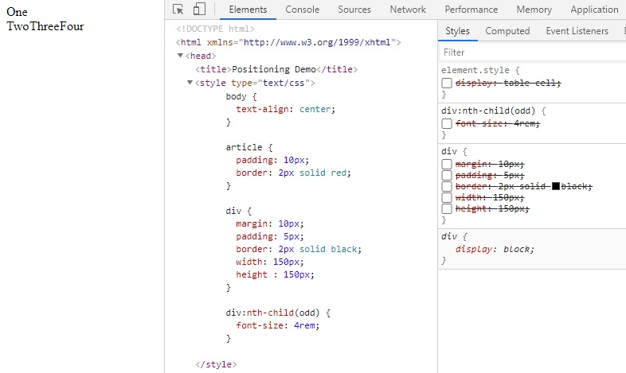
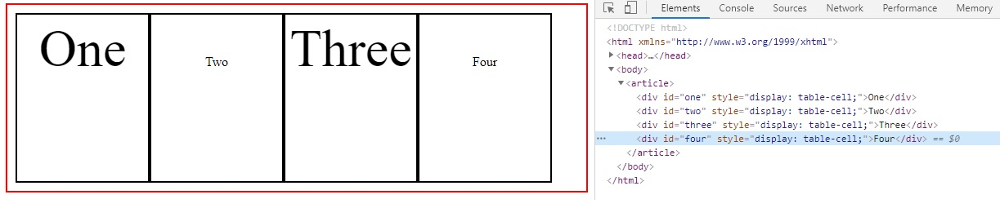
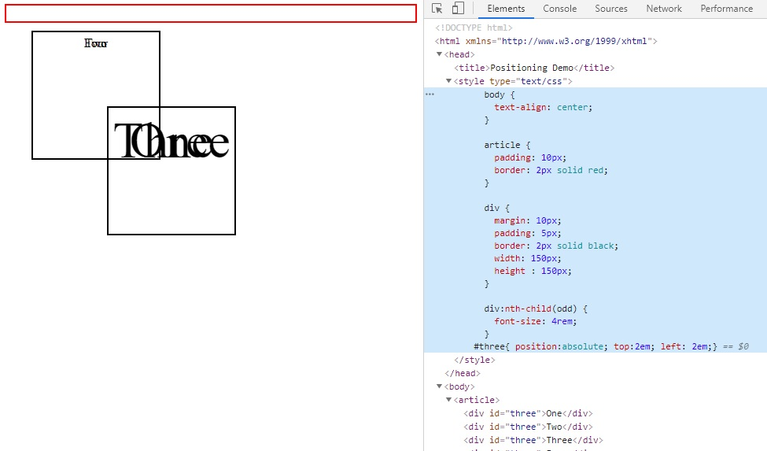
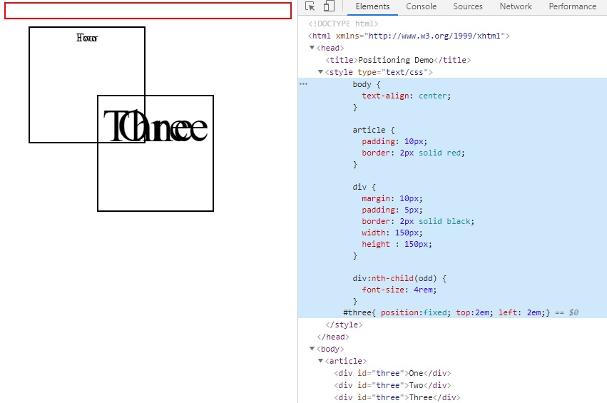
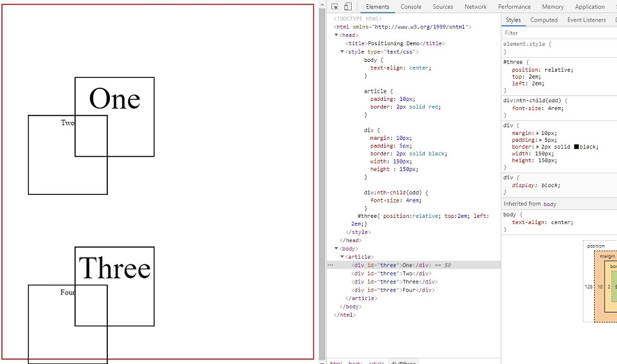

One
Two
Three
Four
Captura de los resultado para el cambio de estilo CSS
1. Aplicaci�n del estilo "display: inline"

2. Aplicaci�n del estilo "display: inline-block"

3. Aplicaci�n del estilo "display: ms-flex"

4. Aplicaci�n del estilo clear boxes CSS

5. Aplicaci�n del estilo table-cell CSS

6. Aplicaci�n del estilo position: absolute CSS

7. Aplicaci�n del estilo position: fixed CSS

8. Aplicaci�n del estilo three atributo CSS
